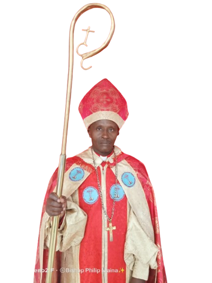
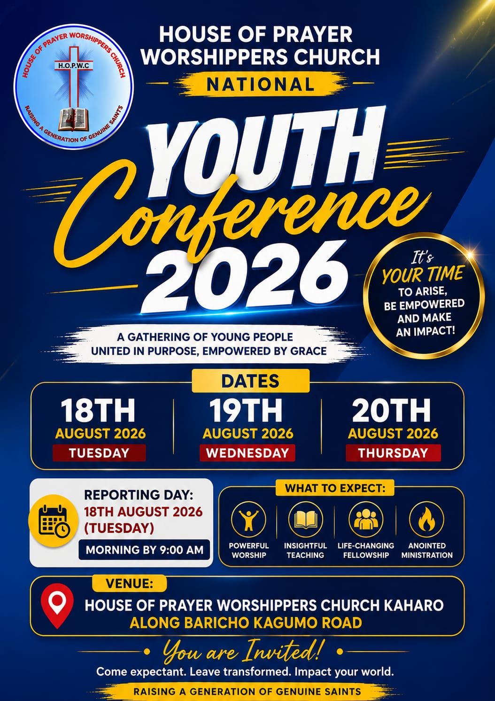

House of Prayer Worshippers Church
Raising a Generation of Genuine Saints!
Raising a Generation of Genuine Saints!
Raising a Generation of Genuine Saints
House of Prayer Worshippers Church is a Christ-centered ministry committed to raising believers who live holy, authentic, and Spirit-led lives. We are passionate about worship, prayer, discipleship, and teaching God's Word.
To raise a generation of genuine saints who walk in holiness, truth, and the power of the Holy Spirit.
To proclaim the Gospel of Jesus Christ, disciple believers, equip leaders, strengthen families, and impact communities through prayer, worship, and the teaching of God's Word.
Seeking God through a lifestyle of prayer.
Teaching and living according to Scripture.
Living lives that honor God in every area.
Growing believers into mature followers of Christ.
Sharing the Gospel and reaching communities.
Glorifying God through sincere worship and praise.

Bishop Joseph Mwangi Njekehu is the Founder and Presiding Bishop of House of Prayer Worshippers Church. He is a dedicated servant of God with a strong calling in teaching, discipleship, leadership development, and raising genuine saints.
For over 13 years, he has faithfully led the ministry, establishing churches, training leaders, and impacting lives through God's Word.
Read Full Biography
National Treasurer
Kirinyaga Central Region Overseer
0790 128 683
Overseer
Kirinyaga South Region
Kaharo, Kirinyaga County
Along Kagumo–Baricho Road
5 Branches
2 Branches
6 Branches
2 Branches
1 Branch
Growing Together in Faith, Service & Purpose
Through our various ministries, we nurture spiritual growth,
discipleship, fellowship, worship, and service to God's people.
Empowering young people to live for Christ and impact their generation.
Guiding teenagers in their spiritual growth and identity in Christ.
Teaching children the Word of God in a fun and engaging way.
Leading the church into God's presence through worship and praise.
Reaching communities with the Gospel through missions and outreach programs.
Building strong families and spiritual growth through fellowship.
Join Us In Fellowship & Worship
📅 August Every Year
A gathering of young people for worship, discipleship, leadership training, and spiritual growth.
📅 December – Kaharo Headquarters
Bringing together believers from all branches for worship, teaching, fellowship, and ministry impartation.
📅 Weekly Across Branches
Regular prayer gatherings focused on spiritual growth, intercession, and revival.

Join us for worship, discipleship, leadership training, and spiritual growth.
We'd love to hear from you. Reach out for prayer, fellowship, ministry information, or general inquiries.
📍 Kaharo, Kirinyaga County
📞 Secretary General: +254 722 249255
✉️ Email: houseofprayerworshippers@gmail.com
📘 Facebook: House of Prayer Worshippers Church
💬 WhatsApp: Chat With Us